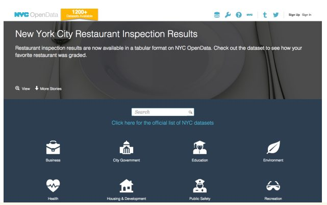
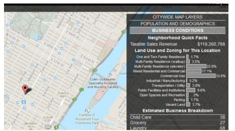

درحالیکه کارآفرینان خردهفروشی در کسبوکار مربوط به خود متخصص هستند، آنها اغلب فاقد دسترسی به اطلاعات باکیفیت بالا در مورد شرایط اقتصادی محلههایی هستند که در آن کار میکنند یا در نظر دارند کار کنند. اطلس کسبوکار نیویورک برای کاهش شکاف اطلاعاتی با فراهم کردن یک ابزار عمومی طراحیشده است که به کسبوکارهای کوچک امکان دسترسی به دادههای باکیفیت بالا را میدهد تا به آنها کمک کند تصمیم بگیرند که یک کسبوکار جدید ایجاد کنند یا کسبوکار موجود را توسعه دهند. این ابزار مجموعهای از دادهها را گرد هم میآورد، ازجمله دادههای تجاری از وزارت امور مصرفکنندگان، دادههای مالیات بر فروش از وزارت دارایی، دادههای جمعیت شناختی از سرشماری و دادههای ترافیک از مکانسنج، یک استارتآپ در شهر نیویورک با تمرکز بر اطلاعات ترافیک آنی.
- تأثیر دادهی باز را زمانی میتوان تقویت کرد که دولت بهطور مستقیم با کسبوکار خصوصی بر روی اقدامات هدفمند کار کند. چنین «همکاری داده» شکل جدیدی از همکاری را نشان میدهد، فراتر از مدل مشارکت دولتی - خصوصی، که در آن شرکتکنندگان بخشهای مختلف - ازجمله شرکتهای خصوصی، مؤسسات تحقیقاتی و سازمانهای دولتی - میتوانند دادهها را مبادله کنند تا به حل مشکلات عمومی کمک کنند.
- اگرچه تعداد زیادی از پروژههای دادهی باز در مراحل اولیه در سراسر جهان بر بیرون دادن اطلاعات تمرکز دارند، مرحله بعدی باید حول انتشار هدفمند و کاربرمحور باشد. در مثال موردبحث در اینجا، کار کاربرمحور انجامشده توسط دپارتمان خدمات کسبوکارهای کوچک کمک کرد تا اطمینان حاصل شود که اطلس کسبوکار بهگونهای طراحیشده است که آن را بهویژه برای جامعه کسبوکارهای کوچک نیویورک مفید میکند.
- دفتر تجزیهوتحلیل دادههای شهردار نیویورک (MODA) مثالی ارائه میدهد که چگونه دولتها میتوانند با انجام کارهای تحلیلی موردنیاز برای افراد داخل و خارج از دولت برای به دست آوردن بینشهای جدید از دادهها، فراتر از ارائه دادهها در قالبهای خام به عموم مردم عمل کنند.
۱. پیشینه و زمینه
در سالهای اخیر، شاهد بودهایم که زندگی شهری با دادهها در حال دگرگون شدن است. از شیکاگو تا لندن تا سنگاپور، مدیران و برنامهریزان شهری به دادهها برای کمک به برنامهریزی آینده و رسیدگی به مسائل روزمره و پیشپاافتاده مانند چالهها و جمعآوری زباله روی میآورند. اساس چنین روندهایی آگاهی از مقدار زیادی از دادههای تولیدشده (اغلب بهصورت منفعلانه) در مراکز شهری، از طریق دستگاههایی مانند گوشیهای هوشمند و سنسورها است. به گفته مجله اکونومیست، امروزه شهرها «رایانههای فضای باز» و «کارخانههای داده» هستند.
در سال ۲۰۰۲، مایکل بلومبرگ بهعنوان صد و هشتمین شهردار نیویورک انتخاب شد. بلومبرگ ثروت خود را با ارائه دادهها و تجزیهوتحلیلهای پیچیده برای معاملهگران مالی به دست آورده بود. احتمالاً این امر اجتنابناپذیر بود که تحت مدیریت او، نیویورک به بسیاری از شهرهای جهان بپیوندد که به دنبال استخراج ارزش بیشتر از ترابایت دادههایی هستند که هرروزه توسط شهروندانشان ایجاد میشود.
در سال ۲۰۱۳، از طریق دستور اجرایی شماره ۳۰۶، شهر نیویورک دفتر تحلیل داده شهردار (MODA) را ایجاد کرد. هدف اعلامشده این دفتر «استفاده از دادههای شهری برای دولتی مؤثرتر، کارآمدتر و شفافتر» بود. امروزه این دفتر شامل گروهی از تحلیلگران است که در تالار شهر مستقر هستند و دادهها را از طیف گستردهای از منابع جمعآوری و تحلیل میکنند. در میان سایر حوزهها، MODA بر روی پیشگیری از جرم، واکنش به فاجعه، بهبود خدمات عمومی و توسعه اقتصادی کار میکند. MODA همچنین نقش مهمی در راهاندازی پورتال دادهی باز نیویورک ایفا کرد ((https:// nycopendata.socrata.com، که در حال حاضر بیش از ۱۲۰۰۰ مجموعه داده مربوط بهسلامت، کسبوکار، امنیت عمومی و بسیاری موارد دیگر را در خود جایداده است. علاوهبراین، MODA به ایجاد DataBridge، یک مخزن واحد و یکپارچه از اطلاعات کمک کرد که هدف آن افزایش به اشتراکگذاری دادهها و قابلیت همکاری بین سازمانهای مختلف نیویورک بود. در جولای ۲۰۱۵، این شهر سند استراتژی «دادهی باز برای همه» خود را منتشر کرد که بر دو «باور» مرکزی تمرکز دارد: اینکه هر نیویورکی میتواند از دادهی باز سود ببرد؛ و این دادهی باز میتواند از هر نیویورکی سود ببرد.

به دلیل این تلاشها و تلاشهای دیگر، شهر نیویورک معمولاً بهعنوان یک رهبر در اقدامات دادهی باز در ایالاتمتحده در نظر گرفته میشود (که خود دومین کشور در بارومتر دادهی باز است). MODA، بهطور خاص، یک نهاد پیشگام و بهطور فزاینده شبیهسازیشده در اکوسیستم دادهی باز است. این امر نهتنها در انتشار دادهی باز برای افزایش پاسخگویی و نوآوری، بلکه در انجام کار تحلیلی بر روی آن داده نیز نقش مهمی ایفا کرده است. این کار شامل اندازهگیری کارایی خدمات شهری، ارائه پیشبینیهای دادهمحور و، مانند اطلس کسبوکار، ترکیب مجموعه دادههای باارزش از منابع متنوع برای فراهم کردن بینش و تصورات جدید برای سازمانهای دولتی و عموم مردم است.
تلاشهای تجزیهوتحلیل MODA، که در زمان نوشتن این مقاله توسط مسئول ارشد تجزیهوتحلیل شهر نیویورک، دکتر آمین رامشاریکی انجام شد، برای کمک به واکنش و بازیابی بلایا، بهبود ارائه آژانسها و خدمات شهری، امکان اشتراکگذاری دادهها در بین سازمانهای شهری، متبلور ساختن بهترین شیوهها در تجزیهوتحلیل دادهها و، همانطور که در موردی که در اینجا توضیح دادهشده مشهود است، مشوق توسعه اقتصادی مستقر شدهاند. در این حوزههای تمرکز و انواع کار تحلیلی، MODA چهار هدف اصلی و اساسی را دنبال میکند: بهبود آگاهی، اندازهگیری موفقیت، به حداکثر رساندن تأثیر و افزایش تعامل.
مایک فلاورز، مدیر سابق Mashariki و اولین مدیر ارشد تجزیهوتحلیل شهر نیویورک، در گزارش سالانهای که پس از اولین سال فعالیت MODA منتشر شد، نقش اساسی MODA را در عملیات دادههای شهر توصیف کرد: «در طی سه دوره گذشته، سازمانهای ما سیستمهای اطلاعاتی را توسعه دادهاند که از آنها برای امنتر کردن خیابانهای ما، پرجنبوجوش کردن کسبوکار ما و تمیزتر کردن پارکها استفاده میکنند. MODA از طریق ترکیبی از تجزیهوتحلیل آماری، مهارتهای مهندسی، و بررسی عمیق مأموریتها و ساختار سازمانی آژانسها - چرایی، چیستی و چگونگی مدیریت شهری - این سیستمها را به هم پیوند میدهد و شهر را قادر میسازد تا از دانش و تجربه جمعی ما برای مقابله با بزرگترین چالشهای ما استفاده کند».
به گفته مقامات MODA، مأموریت و پروژههای آن بر چالشهای «ناراحتکننده» پیش رو نیویورکیها متمرکز است درحالیکه تلاشهای آن در حال استفاده از قابلیتهای تحلیلی جدید است. لیندزی مولیناکس، مدیر تجزیهوتحلیل در MODA، به این نکته اشاره میکند که «[پرداختن به نیاز واقعی] چیزی است که ما درباره آن در MODA فکر میکنیم - هر پروژه به نیازی میپردازد. ما میخواهیم مطمئن شویم که آنچه انجام میدهیم مفید است».
۲. توصیف و آغاز پروژه
اطلس کسبوکار نیویورک که در سال ۲۰۱۳ آغاز شد، بخشی از تلاش گستردهتر MODA با هدف «هدایت رشد کسبوکارهای کوچک با تجزیهوتحلیل» است. این تلاش گستردهتر شامل سرشماری جامع کسبوکارها است که پس از ابرطوفان سندی، زمانی که شهر برای ارزیابی تأثیر کامل طوفان بر کسبوکارها و اقتصاد تلاش میکرد، ایجاد شد. پیش از آغاز کار MODA در این حوزه، هیچ سابقه جامعی از کسبوکارها در این شهر وجود نداشت. MODA به دنبال پر کردن این شکاف اطلاعاتی باهمکاری PLUTO، یک پایگاهداده از کاربری زمین و دادههای جغرافیایی، برای گردآوری یک «تصویر کاملتر» از کسبوکارها و فعالیت تجاری در شهر نیویورک بود.
«برخی از دادههای موردنیاز در طراحی اطلس برای ما واضح بود، اما سؤال این بود که چه چیزی برای کارآفرینان مفید است در مقابل اینکه چه چیزی اضافهبار اطلاعاتی است؟»
لیندسی مولیناکس، دفتر تحلیل داده شهردار

اطلس کسبوکا ر شهر نیویورک ناشی از شناخت مقامات شهری از این موضوع است که وقتی صحبت از داده میشود، شرکتهای بزرگ اغلب نسبت به شرکتهای کوچکتر برتری دارند. درحالیکه کسبوکارهای بزرگ میتوانند مشاوران گرانقیمتی استخدام کنند و تحقیقات دادهمحور انجام دهند، کسبوکارهای کوچکتر باید برای اتخاذ تصمیمات مهم کسبوکار، مانند محل باز کردن یک مکان جدید یا چگونگی مدیریت چالشهای قانونی، بر «احساس درونی» تکیه کنند. مایک فلاورز مزایای کسبوکارهای بزرگ را به شرح زیر توضیح میدهد: «در بسیاری از بخشهای منهتن، شما نمیتوانید یک گربه مرده را بدون ضربه زدن به یک استارباکس تکان دهید. این افراد زیرساخت قوی دارند، ظرفیتی برای کمک به آنها برای کشف دو چیز: الف)در وهله اول باید کجا شعبه باز کنند؛ و ب) مدیریت چالشهای قانونی باز کردن یک مکان جدید. او اضافه میکند که برای کسبوکارهای کوچک، کمبود داده یک مشکل «مزمن» است و «احتمالاً» از زمانی که امپراتور آوگوستوس تلاش میکرد کسبوکارهای کوچک را در رم تشویق کند، مزمن بوده است».
اگرچه کار بر روی اطلس کسبوکار با چند پیچوتاب دنبال شد، اما با بحث در MODA در مورد اینکه مالکان کسبوکارهای کوچک چه احساسی از دولت شهر دارند، بهجای اینکه توسط آن حمایت شوند، شروع شد. فلاورز اشاره کرد که سیستم رتبهبندی رستورانهای شهر، که نمرات را بر اساس مطابقت آنها با مقررات بهداشتی به رستورانها اختصاص میدهد، به سود زنجیرها و رستورانهای بزرگ است، که معمولاً دارای «توان مالی و تجربه نهادی و منابع نهادی برای تثبیت شدن در انطباق کد زیرساخت خود» هستند. اطلس کسبوکار یک محور دور از الهام خاص در رابطه با انطباق کد را نشان میدهد، اما در راستای تمرکز بر تجهیز صاحبان کسبوکارهای کوچک با ابزارهای جدید برای رقابت با زنجیرههای بزرگتر باقی میماند.
به گفته جان فینبلات، مشاور ارشد سیاست شهردار بلومبرگ، اطلس کسبوکار اطلاعات را «دموکراتیک» میکند و «تحقیق با کیفیت را در اختیار صاحبان مشاغل کوچک قرار میدهد». مهم است توجه داشته باشید که بسیاری (اما نه همه) دادههای موجود در اطلس کسبوکار قبلاً وجود داشتهاند - برای مثال، از طریق پورتال دادهی باز شهر - و به لحاظ تئوری حداقل در دسترس صاحبان کسبوکارهای کوچک بود. بااینحال، همانطور که اشاره شد، اغلب به شکل ناقص و بدون لایه تجزیهوتحلیل و تجسم پیچیده موجود در اطلس کسبوکار بود که هردوی آنها دادهها را برای کارآفرینان قابلدسترستر و مفیدتر میکنند. برای استفاده از این ابزار، اهل کسبوکار از نقشه بازدید کرده و یک محله را انتخاب میکنند. دادههای جمعآوریشده توسط این برنامه شامل جمعیت، توزیع جمعیت بر اساس سن، درآمد متوسط خانوار، تعداد خانوادههای دارای فرزند، مالکان خانه در مقابل اجارهکنندگان و موارد دیگر مربوط به آن محله است. استفاده از اطلس کسبوکار نهتنها رایگان است، بلکه کاربران میتوانند در جلسات آموزشی رایگان را که در مراکز تجاری شهر برگزار میشوند، ثبتنام کنند که به آنها کمک خواهد کرد تا بیشترین استفاده را از این ابزار ببرند.
یکی از مهمترین دادههای پلتفرم، ترافیک پیاده در محلههای مختلف است. برای جمعآوری این اطلاعات، نیویورک با یک شرکت نوپای محلی به نام مکانسنج، یک «پلتفرم هوش شهری» همکاری کرد. مکانسنج از دوربینهایی (شامل دوربینهای ترافیکی خیابانهای شهری و دوربینهای IP سنسوردار) برای ارزیابی حرکت جمعیت در محلهها استفاده میکند. اطلاعات بهدستآمده شامل دادههای ترافیک عابران پیاده و وسایل نقلیه است. درحالیکه بیشتر کار تحلیلی بهصورت الگوریتمی انجام میشود، مکانسنج برای تحلیل ویدئوها و انجام بررسیهای تصادفی کیفیت کاری که توسط الگوریتمها انجام میشود، به انسانها متکی است. دادههای بهدستآمده به اهل کسبوکار نشانی از تعداد مشتریان احتمالی میدهد، بنابراین به راهنمایی تصمیمهای کسبوکار مرتبط با مکان کمک میکند. شهر همچنین برنامههایی برای تکمیل داده با استفاده از اطلاعات جمعسپاری شده دارد. اگرچه بخش مهمی از اطلس کسبوکار است، اما کار مکانسنج در مورد تعین کمیت فضاهای عمومی میتواند منجر به نگرانیهای مربوط به حریم خصوصی در شهر پایین جاده شود. بهعبارتدیگر، مکانسنج گامهای محکمی برای کاهش این نگرانیها برداشته است: الف) پردازش ویدئو در زمان واقعی بهطوریکه کمتر از ۰.۰۱ درصد از کل ویدئو ضبط یا ذخیره شود - و تنها برای اهداف پردازش و تضمین کیفیت؛ و ب) تنها شمارش ناشناس عابران پیاده را ارائه میکند، بدون اینکه هویت خاصی ضمیمه شود. نیکول وانگ معاون سابق مدیر فناوری ایالاتمتحده نیز بهعنوان مشاور حریم خصوصی شرکت عمل میکند.
علاوه بر دادههای مکانسنج، اطلس شامل دادههایی است که از ادارات و سازمانهای دولتی مختلف جمعآوری شدهاند. این موارد شامل دپارتمان امور مصرفکننده، دپارتمان امور مالی (بهعنوانمثال، اطلاعات مالیات بر فروش) و دادههای جمعیتشناختی از نتایج سرشماری است. اطلس این دادهها را با اطلاعات مشترک از وزارت بهداشت و سلامت و بهداشت روانی (DOHMH)، کمیسیون انسجام تجاری (BIC)، وزارت حفاظت از محیطزیست (DEP)، وزارت برنامهریزی شهری (DCP) و وزارت ساختمانها (DOB) در شهر نیویورک و همچنین دادههای باز ایالتی و ملی تکمیل میکند. در بسیاری از موارد، وظیفه MODA شامل ترکیب و تحلیل مجموعه دادههایی بود که قبلاً برای عموم باز و قابلدسترس بودند. در موارد دیگر، تلاش بیشتری از سوی MODA برای ایمنسازی انتشار دادهها موردنیاز بود. برای مثال، دادههای مالیات بر فروش از وزارت دارایی به دلیل شامل بودن اطلاعات شخصی قابلشناسایی محافظت میشوند. برای گنجاندن دادهها در اطلس، MODA ابتدا باید اطلاعات شخصی را از طریق فرآیند ناشناسسازی حذف میکرد.
بهمنظور ترکیب تمام این دادهها در یک مکان، تیمی که اطلس را ایجاد میکرد، باید بر چندین چالش فنی و مفهومی غلبه میکرد. بهعنوانمثال، درحالیکه تا جایی که ممکن است دادهها از DataBridge شهر (که در بالا توضیح داده شد) بیرون کشیده شدند، مسائل اجتنابناپذیری در رابطه با سازگاری مجموعه دادهها وجود داشت. تفاوتهای بین استانداردهای داده و فرمتها یک چالش عمده و وقتگیر در تلاش برای ترکیب جریانهای داده چندگانه به یک ابزار قابلاستفاده ایجاد میکند. علاوه بر این، یافتن دادههای دقیق برای کسبوکارهای محلی چالشبرانگیزتر ازآنچه انتظار میرفت بود. همانطور که مولیناکس توضیح داد، هر صنعت مقررات خاص صدور مجوز خود را دارد (و برخی از کسبوکارها، برای مثال کتابفروشیها، اصلاً نیاز به صدور مجوز ندارند) که نشان دادن دقیق و ترکیب اطلاعات محلی کسبوکارها در میان بخشها را دشوار میسازد.
طراحی کاربرمحور و همکاری با دپارتمان خدمات کسبوکارهای کوچک
اگرچه ارزش کلی پیشنهاد اطلس کسبوکار نیویورک از همان ابتدا واضح بود، MODA تصمیم گرفت با اداره خدمات کسبوکارهای کوچک شهر نیویورک (SBS) شریک شود تا اطمینان حاصل شود که نیازهای کسبوکارهای کوچک (مخاطبان هدف آن) واقعاً برآورده شده است. همانطور که مولیناکس اشاره کرد: «برخی از دادههای موردنیاز در طراحی اطلس برای ما آشکار بودند، اما سؤال این بود که چه چیزی برای کارآفرینان اطلاعات مفید است در مقابل اینکه چه چیزی اضافهبار است؟ SBS بهعنوان کارشناسان موضوعی ما عمل میکردند که با کارآفرینان واقعی تعامل داشتند (برای مثال، مردم ممکن است برای باز کردن یک نانوایی به آنها مراجعه کنند) و میتوانستند از اطلس برای رفع مستقیم این نیازها استفاده کنند.... ما همیشه با سازمانهای مشتری همکاری میکنیم که متخصصان موضوعی هستند و میتوانند به تعریف اینکه موفقیت چگونه است کمک کنند».
از طریق تحقیقات قوم شناختی و مصاحبهها، SBS توانست به MODA کمک کند تا تعیین کند چه چیزی برای انواع مختلف کاربران مناسبتر است. بهعنوانمثال، MODA در اصل بر نمایش برخی از اطلاعات تجاری و جمعیتی بهعنوان امتیازی برای یک موقعیت جغرافیایی مشخص تمرکز داشت. بازخورد کاربر، که با کمک SBS جمعآوریشده بود، به MODA کمک کرد تا تشخیص دهد که درواقع، کارآفرینان بیشتر به دادههای با تراکم کمتر علاقه دارند؛ بیشتر تاجران، دادههای اصلی را میخواستند تا یک امتیاز واحد برای همه. بنابراین، بهجای یک امتیاز یا درجه ساده، دادهها اکنون به شکل «خام» جداگانه ترسیم میشوند که به کاربران اجازه میدهد تا نتایج خود را استخراج کنند.
علاوه بر همکاری با SBS برای تکمیل پایگاه اطلاعاتی پلتفرم، MODA با سیستم کتابخانه شهر نیویورک برای افزایش استفاده از آن همکاری کرد. تحقیقات به فلاورز و تیم او نشان داده بودند که بسیاری از کارآفرینان برای کسب بینش درباره چگونگی شروع یک کسبوکار جدید، به کتابخانه محلی خود تکیه میکنند. MODA با در نظر گرفتن این مخاطبان بالقوه کاربران، با کارکنان کتابخانه کار کرد و آنها را آموزش داد تا این پلتفرم را به کارآفرینان بالقوه معرفی کنند و اساساً بهعنوان «مشاوران کسبوکار کوچک» عمل کنند.
بهطورکلی، رویکرد MODA برای مشارکت با سازمانها و مؤسسات مختلف، بهطور قابلتوجهی مفید اثباتشده است. به گفته فلاورز، این بخشی از یک استراتژی سنجیده برای تضمین طول عمر اطلس کسبوکار است. همانطور که فلاورز میگوید: «شما باید خدمات شهری را در هیئت بهکارگیرید. اگر آنها را بهعنوان شرکتکنندگان اصلی در هیئت نداشته باشید، در انتخابات بعدی هر چیزی که بر روی آن کار کردهاید از بین میرود».
۳. تاثیر
مانند بسیاری از پروژههای شهری مبتنی بر داده در سراسر جهان، اطلس کسبوکار از وجود مقادیر فراوان داده و پایگاه کاربری نسبتاً پیچیدهای که بهخوبی از پتانسیل دادههای باز آگاه و مطلع است، بهره برده است. این اکوسیستم مفید به تأثیری ملموس و تقریباً فوری برای ذینفعان پروژه تبدیلشده است.
ذینفعان موردنظر
کارآفرینان و صاحبان کسبوکارهای کوچک
جامعهای که بیشترین استفاده مستقیم از داده موجود در اطلس کسبوکار را خواهد داشت.
بهبود قابلیتهای تصمیمگیری از طریق دسترسی آزاد به دادههای تحقیقاتی بازار و تحلیلهایی که بهطورمعمول با هزینه زیادی به دست میآیند.
شواهد فرصتهای بازار فراهمشده توسط اطلس میتواند برای تأمین مالی و سرمایهگذاری برای کسبوکارهای جدید مفید باشد.
شهروندان نیویورک
اطلس کسبوکار با ارائه پشتیبانی تصمیمگیری به کارآفرینان کسبوکارهای کوچک، به دنبال ایجاد فرصتهای شغلی جدید در سراسر شهر نیویورک است.
درنتیجه افتتاح کسبوکارهای جدید بر اساس دیدگاههای اطلس کسبوکار، مصرفکنندگان باید شاهد هجوم کسبوکارهای جدید با هدف نیازهای جوامع خود باشند.
بهطور خاص، ساکنان محلههای محروم سنتی در شهر، از کسبوکارهای جدیدی که در منطقه آنها درنتیجه درک بیشتر نیازها و فرصتهای سطح جامعه باز میشوند، بهره میبرند.
برابرسازی شرایط برای تحقیقات بازار
یکی از مهمترین تأثیرات اطلس کسبوکار، روشی است که در آن شرایط را بین کسبوکارهای بزرگ و کوچک هموارسازی میکند. گزارش سالانه ۲۰۱۳ MODA اشاره میکند که «زمانی که یک خردهفروش بزرگ ملی به دنبال افتتاح یک فروشگاه جدید است، آنها اغلب تحقیقات پیچیده بازار محله را سفارش میدهند که به شرکت کمک میکند تصمیم بگیرد کسبوکار جدید را کجا قرار دهد». این نوع تحقیقات اغلب برای کسبوکارهای کوچکتر بسیار گران است؛ اما همانطور که جان فینبلات، مشاور سیاسی ارشد شهردار بلومبرگ میگوید، اطلس کسبوکار، تحقیق را عمومیسازی میکند و تحقیق کیفی را در دستان مالکان کسبوکارهای کوچک قرار میدهد.
حتی وقتی کسبوکارهای کوچک به داده دسترسی دارند (مثلاً، از طریق منابع دولتی یا سایر منابع)، ممکن است فاقد مهارتهای تحلیلی برای پردازش و درک آن باشند. در اینجا هم اطلس کسبوکار نقش قدرتمندی ایفا میکند، ابزارهای تجزیهوتحلیل و تصویرسازی پیچیده آن بیشتر شرایط را بین نقشآفرینان بزرگتر و کوچکتر تراز میکند. در جلسه مدیران ارشد داده شهری، امن رامشاریکی، مسئول اصلی تحلیل شهر نیویورک، به روشهای بسیاری اشاره کرد که در آنها این دادهها و تحلیلها میتوانند کسبوکارهای کوچک را توانمند سازند. او مثال یک کارآفرین که برای گرفتن وام به یک بانک مراجعه میکند را ذکر کرد. با اطلاعات موجود در اطلس کسبوکار، کارآفرین میتواند یک پرونده قانعکنندهتر، با پشتوانه شواهد واقعی، برای پایداری و پتانسیل کسبوکار ایجاد کند.
توانمندسازی تحلیل منطقه بهبود کسبوکار (BID)
تأثیر بیشتر اطلس کسبوکار در خواستههای SBS برای استقرار اطلس برای کار خود مشهود است. در حال حاضر، SBS در حال برنامهریزی است تا از دادههای موجود در اطلس برای کمک در تجزیهوتحلیل اینکه چگونه تقویت بخشهای بهبود کسبوکار (BIDs) منجر به رشد اقتصادی در نیویورک شده است، استفاده کند. BID ها مشارکت عمومی - خصوصی هستند که در آن مالکان املاک و کسبوکار انتخاب میکنند تا مشارکت جمعی در حفظ، توسعه و ترویج منطقه تجاری خود داشته باشند. دادههای موجود به لطف اطلس کسبوکار به SBS اجازه میدهد تا محلههای BID را ازنظر تغییرات اقتصادی، سرمایهگذاریهای تجاری و فعالیتهای تجاری مقایسه کند؛ این امر بهنوبه خود به SBS اجازه خواهد داد تا شناسایی کند که کدام BID ها تا به امروز بیشترین تأثیر را داشتهاند و بهترین روشها را برای تکرار موفقیت خود در سراسر شهر توسعه دهند.
استقرار اطلس کسبوکار برای افزایش رشد BID ها به جامعه خاص دیگری اشاره میکند که از در دسترس بودن جدید دادههای تحقیق بازار بهره میبرد: ساکنان محلههای محروم نیویورک. همانطور که ماشارکی اشارهکرده است، «سازمانهای شهری نیز میتوانند از اطلس کسبوکار برای پرداختن به کسبوکارهای بزرگ استفاده کنند و به آنها نشان دهند که دلیل خوبی برای باز کردن مکانها در محلههایی که ممکن است از آنها اجتناب کرده باشند وجود دارد». بهجای تصمیمگیریهای مبتنی بر مکان صرفاً بر اساس شهود (یا تعصبات رسانهای)، شرکتها اکنون میتوانند نگاه دقیقتری به دادهها انداخته و نواحی محرومی را پیدا کنند که یک پرونده کسبوکار جذاب را ارائه میدهند. این تنها یکراه دیگر است که در آن اطلس کسبوکار پتانسیل این را دارد که شرایط را برای مصرفکنندگان و همچنین برای کسبوکارها یکسان کند.
تأثیرگذاری بر نوآوری تحلیل دادهها در نیویورک و خارج از کشور
مانند بسیاری از مثالهای موجود در این مجموعه از مطالعات موردی، کار MODA دارای اثرات فراگیر مهمی بوده و باعث توسعه سایر پروژههای دادهی باز مشابه شده است. فلاورز اشاره میکند که اطلس کسبوکار «قطعاً این قابلیت را دارد تا نشان دهد که دادهی باز میتواند بسیار بیشتر از ساختن ساده یک برنامه Yelp باشد». بهعنوانمثال، اخیراً سازمان آتشنشانی نیویورک (FDNY) یک واحد تجزیهوتحلیل ایجاد کرده است که در تیم تجزیهوتحلیل MODA مدلسازی شده است. تلاشهای تیم FDNY شامل توسعه و استفاده از سیستم بازرسی مبتنی بر ریسک (RBIS) است که «این سازمان را قادر میسازد تا ساختمانهای در معرض خطر آتشسوزی را شناسایی کند و آنها را برای بازرسیهای آتشنشانی اولویتبندی کند». دادهها با استفاده از DataBridge از انبار داده FDNY و دیگر پایگاههای داده شهری ازجمله برنامهریزی شهری، ساختمانها و غیره ترکیب میشود. در راهاندازی واحد و پلتفرم تحلیلی آن، FDNY مستقیماً با MODA کار کرد و نمونهای از مشارکت سازنده و همافزایی در میان بخشهای شهری را ارائه داد.
نمونه دیگری از اثرات فراگیر MODA در نیویورک را میتوان در پروژهای از اداره ساختمانهای نیویورک برای مدیریت شکایات در مورد غصب غیرقانونی ساختمانها، یک برنامه «۳۱۱ City Pulse» که بهطور زنده فعالیتهای ۳۱۱ شهر را پخش میکند، و یک مکانیسم جمعآوری داده و اشتراکگذاری در واکنش به بلایا، یافت. همه این برنامهها از درسها و اصولی استفاده کردند که توسط MODA به کار گرفتهشده و مورد آزمایش قرارگرفته بودند.
سایر شهرها نیز به تلاشهای دادهی باز نیویورک توجه کردهاند. بهعنوانمثال، بنیاد کاپیتال سیتی در لندن پیشنهاد کرده است که لندن باید به پروژههایی مانند اطلس کسبوکار در تلاشهای خود برای تبدیلشدن به یک «شهر هوشمند» نگاه کند. در گزارش اخیر، این بنیاد میگوید: «اگر یک کسبوکار میخواهد مشتریانی را از بخشهای خاصی از لندن جذب کند، دادههای حملونقل برای لندن (TfL) دقیقاً نشان میدهد که افراد در کجا به شبکه حملونقل دسترسی دارند و کجا دسترسی ندارند. درنتیجه نقشهها میتوانند ایجاد شوند که نشان دهند مردم از کجا حرکت میکنند و به کجا میروند. این میتواند مفید باشد که بدانید در نزدیکی کدام مترو یا اتوبوس برای قرار دادن یک کسبوکار میتوانید برنامهریزی کنید. ایجاد یک ابزار آنلاین برای در دسترس قرار دادن این نوع از مجموعه دادهها بر اساس ایدههایی است که در شهر نیویورک آغاز شدهاند». این احتمال وجود دارد که اشتیاق برای تیمهای تحلیل داده مشابه گسترش یابد، زیرا درسهای آموختهشده و بهترین اقدامات MODA بهطور فزایندهای با نوآوران و سیاستگذاران در سراسر جهان به اشتراک گذاشته میشوند.
۴. چالشها
فرصت ارتباط
یک ابزار تنها زمانی مفید است که مردم واقعاً از آن استفاده کنند؛ بنابراین، درحالیکه اطلس کسبوکار فرصت بزرگی برای درک بیشتر اهل کسبوکار از زمینههایی است که ممکن است در آنیک کسبوکار را باز کنند، انتقال این فرصت به عموم یک چالش مداوم و مهم برای اطمینان از استفاده گسترده خواهد بود. همانطور که مایک فلاورز میگوید: اطلس کسبوکار بخشی از تلاش برای ارائه (فرضی) «نا دین بوریتوس» از نوع بینش تحقیقات بازار و قابلیتهایی است که سالها توسط امثال مکدونالد و مترو مورداستفاده قرار گرفتهاند. اما حصول اطمینان از اینکه نا دین - و هزاران کارآفرین کوچک مانند او - از در دسترس بودن این اطلاعات آگاه هستند، بهعنوان یک چالش باقی میماند.
برای رسیدن به این هدف، افزایش آگاهی و انواع دسترسی انجامشده با کتابخانههای شهری ضروری خواهد بود. علاوه بر این، فلاورز معتقد است که ایجاد رابط برنامه کاربردی (API) به توسعهدهندگان این امکان را میدهد تا دادههای موجود در اطلس کسبوکار را بگیرند و برنامههای کاربردی جدیدی ایجاد کنند که به انتشار گسترده این دادهها کمک کند.
پرداختن به چالشهای فنی
بهمنظور دستیابی به بسیاری از بلندپروازیهای خود برای رشد اطلس کسبوکار، MODA نیاز به پرداختن به تعدادی از چالشهای فنی دارد که میتواند بهعنوان موانع بازدارنده عمل کند. بهعنوانمثال، همانطور که قبلاً اشاره شد، انواع مختلف کسبوکارها معمولاً الزامات صدور مجوز متفاوتی دارند. همانطور که مولیناکس اشاره میکند، این تنها یک نمونه از یک مسئله کلیتر است - «زمینههای دادهای» متفاوتی که برای دستههای مختلف کسبوکار وجود دارد، و این جمعآوری و تحلیل معنادار دادهها از منابع متفاوت را به چالش میکشد.
درگذشته، MODA تعدادی الگوریتم اختصاصی برای غلبه بر چنین مشکلاتی نوشته بود؛ اما چالشها باقی میمانند، و همانطور که آژانس قصد دارد دادههای بیشتری را اضافه کند، آنها احتمالاً میتوانند رشد کنند. یافتن روشهای جدید برای ترکیب و هماهنگسازی منابع بزرگ داده که از سازمانها و گروههای مختلف استخراجشده باشد، یکی از وظایف کلیدی پیش روی سازمان است زیرا سازمان به دنبال گسترش دسترسی و مقیاسبندی تلاشهای خود است.
بهبود دانهبندی دادهها
ثابتشده است که اطلاعات موجود در اطلس کسبوکار، برای افرادی که به دنبال شناسایی محلههای مناسب (یا نامناسب) برای فعالیت هستند، بسیار مفید است؛ اما همانطور که فلاورز اشاره میکند، «یک محله در شهر نیویورک بزرگتر از اکثر شهرهای آمریکا است». او اضافه میکند که برای افزایش سودمندی، اطلس کسبوکار میتواند به دنبال ارائه سطح بهتری از دانهبندی در تحلیلی باشد که برای کاربران خود فراهم میکند. بهعنوانمثال، میتواند فراتر از اطلاعات سطح محله حرکت کند و شاید، بر مناطقی تمرکز کند که شامل ۵ یا ۱۰ بلوک هستند.
۵. نگاهی به مسائل پیش رو
MODA از بسیاری جهات روشهای تصمیمگیری شهروندان و سیاستگذاران در نیویورک را تغییر داده است. اطلس کسبوکار تنها یک مثال است، البته یک مثال با پتانسیل قابلتوجه. با توجه به موفقیت اولیه و پاسخ مثبت به اطلس کسبوکار، MODA برنامههایی برای افزایش آن و گسترش دامنه آن در سالهای آینده دارد.
اطلس کسبوکار ۲.۰: ابزارها و ویژگیهای جدید
اطلس کسبوکار ۲.۰ نامی است که برای مجموعهای از ابزارهای جدید و بهبودیافته MODA که در حال برنامهریزی برای اضافه کردن به اطلس کسبوکار اصلی است، به کار میرود. موارد زیر ازجمله ویژگیهای جدیدی است که ممکن است در بهروزرسانی برنامهریزیشده گنجانده شود:
- ویژگیای که به اهل کسبوکار اجازه میدهد چندین مکان را باهم مقایسه کنند.
- اطلاعات بیشتر درباره ترافیک، ازجمله اطلاعات روزانه مسافران مترو؛
- داده جمعسپاریشده در مورد ترافیک پیاده و وسایل نقلیه، با هدف افزودن دقت و تکمیل اعداد ترافیک مکانسنج؛
- یک ابزار «حلکننده» که به کارآفرینان اجازه میدهد تا نیازها یا مشخصات خود را وارد کرده و مکانهای بالقوه مناسب برای کسبوکار خود را شناسایی کنند.
- MODA همچنین در حال بررسی افزودن یک ابزار تحلیلی پیشبینی کننده است که کسبوکارهایی که در معرض خطر شکست هستند را شناسایی میکند و آنها را با ارائه کمک از سایر کسبوکارهای کوچک هدف قرار میدهد. برای مثال، این «کمک هدفمند» به شکل پیشنهادها وام یا سایر کمکهای مالی خواهد بود.
مشارکت و همکاری
MODA علاوه بر ایجاد ویژگیهای جدید، در نظر دارد تا مشارکتهای موجود را افزایش داده و مشارکتهای جدیدی را آغاز کند که برای افزایش دسترسی و سودمندی اطلس کسبوکار طراحیشدهاند. همانطور که در بالا بحث شد، MODA با SBS همکاری میکند تا رشد اقتصادی مناطق بهبود کسبوکار در نیویورک را تحلیل کند. این مشارکت با تمرکز ویژهبر شناسایی ویژگیها و رفتارهای مشترکی که منجر به رشد اقتصادی میشوند، ادامه خواهد یافت و گسترش خواهد یافت. یکی از اهداف، شناسایی مجموعهای از بهترین اقدامات است که بتواند رشد اقتصادی در شهر را هدایت کند.
علاوهبراین، MODA در نظر دارد تا به مشارکت با تعدادی از ادارات، مؤسسات، شرکتها و افراد خارجی ادامه داده و روابط جدیدی مانند آنها را آغاز کند. در بخش دانشگاهی و تحقیقاتی، MODA درحالحاضر با مرکز علوم و پیشرفت شهری دانشگاه نیویورک (CUSP)، مرکز علوم داده کلمبیا و موسسه پلیتکنیک Rensselaer شریک است. همکاری MODA با آزمایشگاه مایکروسافت بهطور خاص بر روی یک پروژه در رابطه با به پاسخهای خودکار به پیامهای ۳۱۱ SMS متمرکزشده است. MODA همچنین از طریق هکاتونهایی که طی آن پروژههای جدید توسعه داده میشوند و بازخورد کاربران جمعآوری میشود، همکاری نزدیکی با شهروندان عادی دارد.
اگرچه بیشتر کار با مکانسنج بهعنوان یک همکاری و یکباره اتفاق افتاد، کار جدید استارتاپ میتواند به فرصتهای آینده برای تکمیل اطلس کسبوکار منجر شود. گام بزرگ بعدی برای مکانسنج، «توانایی اندازهگیری واقعی سرعت ماشینها در محله شماست، سپس جمعآوری دادهها به نفع محله شما و بهطور گستردهتر از مقامات شهری است». این امر نهتنها میتواند نقش مهمی در Vision Zero ایفا کند - مأموریت شهردار Bill de Blasio برای به صفر رساندن مرگومیر ناشی از ترافیک در شهر نیویورک - بلکه همچنین اطلاعات اضافی جریان ترافیک را به مشاغل ارائه میدهد.
این تغییرات و تغییرات دیگر یا برنامهریزی شدهاند و یا در حال انجام هستند؛ اما بسیاری از مهمترین تغییرات و الحاقات در سالهای پیش رو پیشبینینشده باقی میمانند و بهاحتمالزیاد بهطور مستقیم از سوی کاربران ایجاد میشوند. سند استراتژی «دادههای باز برای همه» MODA یک تلاش هماهنگ برای یادگیری از طریق تماشای نحوه استفاده از سایت و استفادهکنندگان سایت است. کدام نوع داده و ابزارهای تحلیلی از همه مفیدتر هستند؟ به نظر میرسد چه جنبههایی از سایت برای کاربران مشکلاتی را ایجاد میکند یا اصطکاک را نشان میدهد؟ مردم چگونه سایت را پیدا میکنند و چه چیزی آنها را به بازدیدکنندگان همیشگی تبدیل میکند (در مقابل کاربرانی که تنها یکبار از سایت استفاده میکنند)؟ اینها برخی از سؤالاتی هستند که MODA با حرکت روبهجلو، خواهد پرسید و بر پایهی آنها خود را خواهد ساخت.